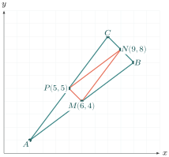

- គណនាចម្ងាយរវាងពីរចំណុចក្នុងប្លង់កូអរដោនេ
- គណនាកូអរដោនេនៃចំណុចកណ្ដាលនៃអង្កត់មួយបានយ៉ាងត្រឹមត្រូវ ។
1. ចម្ងាយរវាងពីរចំណុច (Distance between two points)
ឧបមាថាប្អូនចង់ដឹងពីចម្ងាយត្រង់រវាងផ្ទះពីរនៅក្នុងទីក្រុង ដែលបានគូសនៅលើប្លង់កូអរដោនេមួយ។ បើគេស្គាល់កូអរដោនេនៃចំណុច \(\displaystyle A(x_1 \ , \ y_1)\) និង \(\displaystyle B(x_2 \ , \ y_2)\) តើយើងអាចគណនាប្រវែងនៃអង្កត់ \(\displaystyle AB\) បានដោយរបៀបណា?

ឧទាហរណ៍៖ គេឱ្យពីរចំណុច \(\displaystyle A(2 \ , \ 5)\) និង \(\displaystyle B(6 \ , \ 2)\) ។ ចូរគណនាប្រវែងនៃអង្កត់ \(\displaystyle AB\) ។
គិត៖ យើងមានកូអរដោនេចំណុច \(\displaystyle A\) និង \(\displaystyle B\) ។ យើងអាចបង្កើតត្រីកោណកែងមួយដែល \(\displaystyle AB\) ជាអ៊ីប៉ូតេនុស។
ជ្រើសវិធី៖ យើងនឹងប្រើទ្រឹស្ដីបទពីតាក័រក្នុងត្រីកោណកែង \(\displaystyle ABC\) ដោយទម្លាក់ចំណោលកែងពី \(\displaystyle A\) និង \(\displaystyle B\) ឱ្យកាត់គ្នាត្រង់ចំណុច \(\displaystyle C(2 \ , \ 2)\) ដូចរូបខាងក្រោម។
ធ្វើ៖
ជ្រុងឈរ \(\displaystyle AC = 5 - 2 = 3\)
ជ្រុងដេក \(\displaystyle BC = 6 - 2 = 4\)
តាមទ្រឹស្ដីបទពីតាក័រ៖ \(\displaystyle AB^2 = BC^2 + AC^2\)
\(\displaystyle = 4^2 + 3^2\)
\(\displaystyle = 16 + 9 = 25\) ។
ដូចនេះ \(\displaystyle AB = \sqrt{25} = 5\) ឯកតា ។

ពិនិត្យ៖ ប្រវែងអង្កត់ត្រូវតែជាចំនួនវិជ្ជមាន ដូច្នេះចម្ងាយ \(\displaystyle AB = 5\) គឺត្រឹមត្រូវតាមរូបមន្តរង្វាស់។
ជាទូទៅ សម្រាប់ពីរចំណុច \(\displaystyle A(x_1 \ , \ y_1)\) និង \(\displaystyle B(x_2 \ , \ y_2)\) ណាមួយ គេបានជ្រុងមុំកែង \(\displaystyle AC = |x_2 - x_1|\) និង \(\displaystyle BC = |y_2 - y_1|\) ។ តាមទ្រឹស្ដីបទពីតាក័រ \(\displaystyle AB^2 = AC^2 + BC^2 = (x_2 - x_1)^2 + (y_2 - y_1)^2\) ។
ចម្ងាយរវាងពីរចំណុច \(\displaystyle A(x_1 \ , \ y_1)\) និង \(\displaystyle B(x_2 \ , \ y_2)\) កំណត់ដោយ៖
\(\displaystyle AB = \sqrt{(x_2 - x_1)^2 + (y_2 - y_1)^2}\)
លំហាត់គំរូទី 1៖ ចូរគណនាចម្ងាយរវាងពីរចំណុច \(\displaystyle M(3 \ , \ 7)\) និង \(\displaystyle N(8 \ , \ -5)\) ។
គិត៖ យើងស្គាល់កូអរដោនេ \(\displaystyle M\) និង \(\displaystyle N\) ដែល \(\displaystyle x_1 = 3, y_1 = 7\) និង \(\displaystyle x_2 = 8, y_2 = -5\) ។
ជ្រើសវិធី៖ ជំនួសតម្លៃទាំងនេះចូលក្នុងរូបមន្តចម្ងាយ \(\displaystyle MN = \sqrt{(x_2 - x_1)^2 + (y_2 - y_1)^2}\) ។
ធ្វើ៖ \(\displaystyle MN = \sqrt{(8 - 3)^2 + (-5 - 7)^2}\)
\(\displaystyle = \sqrt{5^2 + (-12)^2}\)
\(\displaystyle = \sqrt{25 + 144} = \sqrt{169} = 13\) ឯកតា ។
ពិនិត្យ៖ លទ្ធផលជាចំនួនពិតវិជ្ជមាន គឺត្រឹមត្រូវ។
លំហាត់គំរូទី 2៖ ចូរគណនាចម្ងាយរវាងពីរចំណុច \(\displaystyle P(-1 \ , \ -2)\) និង \(\displaystyle Q(3 \ , \ 4)\) ។
គិត និង ធ្វើ៖ (សិស្សអាចធ្វើដោយផ្ទាល់)
\(\displaystyle PQ = \sqrt{[3 - (-1)]^2 + [4 - (-2)]^2}\)
\(\displaystyle = \sqrt{(3 + 1)^2 + (4 + 2)^2}\)
\(\displaystyle = \sqrt{16 + 36} = \sqrt{52} = 2\sqrt{13}\) ឯកតា ។
លំហាត់គំរូទី 3៖ គេឱ្យត្រីកោណមួយដែលមានកំពូល \(\displaystyle A(-2 \ , \ 6) \ ; \ B(-1 \ , \ -1)\) និង \(\displaystyle C(1 \ , \ 0)\) ។ ចូរគណនាប្រវែងជ្រុងទាំងបីនៃត្រីកោណ រួចបង្ហាញថាវាជាត្រីកោណកែង ។
គិត៖ ដើម្បីបង្ហាញថាត្រីកោណមួយជាត្រីកោណកែង យើងត្រូវរកប្រវែងជ្រុងទាំងបីសិន រួចផ្ទៀងផ្ទាត់ជាមួយទ្រឹស្ដីបទច្រាសនៃពីតាក័រ (តើការ៉េនៃជ្រុងធំជាងគេ ស្មើផលបូកការ៉េជ្រុងពីរទៀតឬទេ?) ។
ជ្រើសវិធី៖ 1. ប្រើរូបមន្តចម្ងាយសម្រាប់ជ្រុង \(\displaystyle AB, AC, BC\) ។
2. ផ្ទៀងផ្ទាត់ទំនាក់ទំនង \(\displaystyle AB^2 = AC^2 + BC^2\) ឬយ៉ាងណា ។
ធ្វើ៖
គណនាប្រវែងជ្រុង៖
\(\displaystyle AB = \sqrt{[-1 - (-2)]^2 + (-1 - 6)^2}\)
\(\displaystyle = \sqrt{1^2 + (-7)^2} = \sqrt{1 + 49} = \sqrt{50} = 5\sqrt{2}\)
\(\displaystyle AC = \sqrt{[1 - (-2)]^2 + (0 - 6)^2}\)
\(\displaystyle = \sqrt{3^2 + (-6)^2} = \sqrt{9 + 36} = \sqrt{45} = 3\sqrt{5}\)
\(\displaystyle BC = \sqrt{[1 - (-1)]^2 + [0 - (-1)]^2}\)
\(\displaystyle = \sqrt{2^2 + 1^2} = \sqrt{4 + 1} = \sqrt{5}\) ។

ពិនិត្យ និង សន្និដ្ឋាន៖
ត្រីកោណ \(\displaystyle ABC\) ទំនងជាកែងត្រង់ \(\displaystyle C\) (ព្រោះ \(\displaystyle AB\) វែងជាងគេ) ។ យើងផ្ទៀងផ្ទាត់៖
\(\displaystyle AC^2 + BC^2 = 45 + 5 = 50\)
\(\displaystyle AB^2 = 50\)
ដោយសារ \(\displaystyle AC^2 + BC^2 = AB^2\) ហេតុនេះ \(\displaystyle ABC\) ពិតជាត្រីកោណកែងត្រង់ \(\displaystyle C\) ប្រាកដមែន ។
ប្រតិបត្តិ៖ ចូរគណនាចម្ងាយរវាងពីរចំណុច៖
ក. \(\displaystyle A(0 \ , \ 0)\) និង \(\displaystyle B(8 \ , \ -15)\) ខ. \(\displaystyle A(-2 \ , \ 6)\) និង \(\displaystyle B(3 \ , \ -6)\)
គ. \(\displaystyle A(-3 \ , \ -5)\) និង \(\displaystyle B(-1 \ , \ -8)\) ឃ. \(\displaystyle A(5 \ , \ 3)\) និង \(\displaystyle B(11 \ , \ 11)\) ។
2. កូអរដោនេនៃចំណុចកណ្ដាល (Coordinates of midpoint)
ចំណុចកណ្ដាលនៃអង្កត់មួយ គឺជាចំណុចដែលស្ថិតនៅចំពាក់កណ្ដាលនៃអង្កត់នោះ ដែលវាចែកអង្កត់នោះជាពីរផ្នែកស្មើគ្នា។
ករណីនៅលើអ័ក្សអាប់ស៊ីស (x'x): បើ \(\displaystyle A(3 \ , \ 0)\) និង \(\displaystyle B(9 \ , \ 0)\) ឋិតនៅលើអ័ក្ស \(\displaystyle x'x\) ហើយ \(\displaystyle M(x \ , \ 0)\) ជាចំណុចកណ្ដាលនៃ \(\displaystyle [AB]\) នោះ គេបាន \(\displaystyle AM = MB \Rightarrow x - 3 = 9 - x \Rightarrow 2x = 12 \Rightarrow x = 6\) ។ ដូចនេះ \(\displaystyle M(6 \ , \ 0)\) ។

ករណីនៅលើអ័ក្សអរដោនេ (y'y): បើ \(\displaystyle A(0 \ , \ 2)\) និង \(\displaystyle B(0 \ , \ 8)\) ឋិតនៅលើអ័ក្ស \(\displaystyle y'y\) ហើយ \(\displaystyle M(0 \ , \ y)\) ជាចំណុចកណ្ដាលនៃ \(\displaystyle [AB]\) នោះ គេបាន \(\displaystyle AM = MB \Rightarrow y - 2 = 8 - y \Rightarrow 2y = 10 \Rightarrow y = 5\) ។ ដូចនេះ \(\displaystyle M(0 \ , \ 5)\) ។
ឧទាហរណ៍៖ គេឱ្យ \(\displaystyle A(2 \ , \ 1)\) និង \(\displaystyle B(8 \ , \ 4)\) ។ គណនាកូអរដោនេនៃចំណុចកណ្ដាលអង្កត់ \(\displaystyle [AB]\) ។
គិត៖ ចំណុចកណ្ដាល \(\displaystyle M(x \ , \ y)\) ត្រូវមានចំណោលកែងមកលើអ័ក្ស \(\displaystyle x'x\) ដែលជាចំណុចកណ្ដាលនៃចំណោល \(\displaystyle A\) និង \(\displaystyle B\) លើអ័ក្ស \(\displaystyle x'x\) ។ ដូចគ្នាចំពោះអ័ក្ស \(\displaystyle y'y\) ។
ជ្រើសវិធី៖ យើងអាចប្រើលទ្ធផលពីករណីចំណុចលើអ័ក្សខាងលើ ដើម្បីគណនា \(\displaystyle x\) និង \(\displaystyle y\) ដាច់ដោយឡែកពីគ្នា។
ធ្វើ៖
អាប់ស៊ីស \(\displaystyle x\): \(\displaystyle M_1(x \ , \ 0)\) ជាចំណុចកណ្ដាលនៃ \(\displaystyle [A_1B_1]\) ដែល \(\displaystyle A_1(2 \ , \ 0)\) និង \(\displaystyle B_1(8 \ , \ 0)\)។
\(\displaystyle x - 2 = 8 - x \Rightarrow 2x = 10 \Rightarrow x = 5\)
អរដោនេ \(\displaystyle y\): \(\displaystyle M_2(0 \ , \ y)\) ជាចំណុចកណ្ដាលនៃ \(\displaystyle [A_2B_2]\) ដែល \(\displaystyle A_2(0 \ , \ 1)\) និង \(\displaystyle B_2(0 \ , \ 4)\)។
\(\displaystyle y - 1 = 4 - y \Rightarrow 2y = 5 \Rightarrow y = \frac{5}{2}\) ។
ហេតុនេះ \(\displaystyle M(5 \ , \ 5/2)\) ជាចំណុចកណ្ដាលនៃអង្កត់ \(\displaystyle [AB]\) ។

ពិនិត្យ៖ \(\displaystyle M\) ស្ថិតនៅចំពាក់កណ្ដាលចន្លោះ \(\displaystyle A\) និង \(\displaystyle B\) ពិតប្រាកដមែនដោយពិនិត្យលើរូប។
ជាទូទៅ \(\displaystyle A(x_1 \ , \ y_1)\) និង \(\displaystyle B(x_2 \ , \ y_2)\) ជាពីរចំណុច ហើយ \(\displaystyle M(x \ , \ y)\) ជាចំណុចកណ្ដាលនៃអង្កត់ \(\displaystyle [AB]\) យើងបាន៖
នៅលើអ័ក្ស \(\displaystyle x'x\): \(\displaystyle 2x = x_1 + x_2 \Rightarrow x = \frac{x_1 + x_2}{2}\)
នៅលើអ័ក្ស \(\displaystyle y'y\): \(\displaystyle 2y = y_1 + y_2 \Rightarrow y = \frac{y_1 + y_2}{2}\)
កូអរដោនេនៃចំណុចកណ្ដាល \(\displaystyle A(x_1 \ , \ y_1)\) និង \(\displaystyle B(x_2 \ , \ y_2)\) កំណត់ដោយ៖
\(\displaystyle M\left(\frac{x_1 + x_2}{2} \ ; \ \frac{y_1 + y_2}{2}\right)\)
លំហាត់គំរូទី 1៖ គេឱ្យ \(\displaystyle M(4 \ , \ 3) \ ; \ N(-2 \ , \ 8)\) ។ គណនាកូអរដោនេនៃចំណុចកណ្ដាលនៃអង្កត់ \(\displaystyle [MN]\) ។
គិត និង ធ្វើ៖ តាង \(\displaystyle I(x \ , \ y)\) ជាចំណុចកណ្ដាលនៃអង្កត់ \(\displaystyle [MN]\)
\(\displaystyle x = \frac{x_1 + x_2}{2} = \frac{4 + (-2)}{2} = \frac{2}{2} = 1\)
\(\displaystyle y = \frac{y_1 + y_2}{2} = \frac{3 + 8}{2} = \frac{11}{2}\)
ដូចនេះ ចំណុចកណ្ដាលនៃអង្កត់ \(\displaystyle [MN]\) គឺ \(\displaystyle I\left(1 \ , \ \frac{11}{2}\right)\) ។
លំហាត់គំរូទី 2៖ ត្រីកោណមួយមានកំពូលកំណត់ដោយចំណុច \(\displaystyle A(2 \ , \ 1) \ ; \ B(10 \ , \ 7)\) និង \(\displaystyle C(8 \ , \ 9)\) ។ តាង \(\displaystyle M \ , \ N\) និង \(\displaystyle P\) ជាចំណុចកណ្ដាលរៀងគ្នានៃអង្កត់ \(\displaystyle [AB] \ ; \ [BC]\) និង \(\displaystyle [AC]\) ។ ចូរស្រាយបញ្ជាក់ថា ត្រីកោណដែលផ្គុំដោយចំណុចកណ្ដាលនៃជ្រុងទាំងបី (\(\displaystyle MNP\)) ជាត្រីកោណសមបាត ។
គិត៖ យើងត្រូវគណនាកូអរដោនេចំណុចកណ្ដាល \(\displaystyle M, N, P\) ជាមុនសិន។ បន្ទាប់មក ប្រើរូបមន្តចម្ងាយដើម្បីរកប្រវែងជ្រុងនៃត្រីកោណ \(\displaystyle MNP\) ដើម្បីមើលថាតើមានពីរជ្រុងស្មើគ្នាឬទេ (លក្ខណៈត្រីកោណសមបាត)។
ជ្រើសវិធី៖ អនុវត្តរូបមន្តចំណុចកណ្ដាល ៣ដង ដើម្បីបាន \(\displaystyle M, N, P\) រួចអនុវត្តរូបមន្តចម្ងាយលើ \(\displaystyle MN\) និង \(\displaystyle NP\) ជាដើម ដើម្បីប្រៀបធៀប។
ធ្វើ៖
រកកូអរដោនេ \(\displaystyle M, N, P\)៖
\(\displaystyle M\) កណ្ដាល \(\displaystyle [AB]\) : \(\displaystyle M\left(\frac{2+10}{2} \ , \ \frac{1+7}{2}\right) \Rightarrow M(6 \ , \ 4)\)
\(\displaystyle N\) កណ្ដាល \(\displaystyle [BC]\) : \(\displaystyle N\left(\frac{10+8}{2} \ , \ \frac{7+9}{2}\right) \Rightarrow N(9 \ , \ 8)\)
\(\displaystyle P\) កណ្ដាល \(\displaystyle [AC]\) : \(\displaystyle P\left(\frac{2+8}{2} \ , \ \frac{1+9}{2}\right) \Rightarrow P(5 \ , \ 5)\)
ប្រៀបធៀបប្រវែង \(\displaystyle MN\) និង \(\displaystyle NP\)៖
\(\displaystyle MN = \sqrt{(9 - 6)^2 + (8 - 4)^2} = \sqrt{9 + 16} = 5\)
\(\displaystyle NP = \sqrt{(5 - 9)^2 + (5 - 8)^2} = \sqrt{16 + 9} = 5\)

ពិនិត្យ៖ \(\displaystyle MN = NP = 5\) ឯកតា ។ ត្រីកោណ \(\displaystyle MNP\) មានជ្រុងពីរស្មើគ្នា ហេតុនេះវាជាត្រីកោណសមបាត ។
លំហាត់អនុវត្តន៍
ចូរគណនាចម្ងាយរវាងពីរចំណុចដែលមានកូអរដោនេដូចខាងក្រោម ។
ក. \(\displaystyle (9 \ , \ 2)\) និង \(\displaystyle (6 \ , \ 8)\) ខ. \(\displaystyle (5 \ , \ -3)\) និង \(\displaystyle (-2 \ , \ 4)\)
គ. \(\displaystyle (2 \ , \ 5)\) និង \(\displaystyle (0 \ , \ 0)\) ឃ. \(\displaystyle (-6 \ , \ -3)\) និង \(\displaystyle (2 \ , \ 1)\)
ង. \(\displaystyle (8 \ , \ 7)\) និង \(\displaystyle (8 \ , \ -6)\) ច. \(\displaystyle (3 \ , \ 12)\) និង \(\displaystyle (7 \ , \ 12)\)
ឆ. \(\displaystyle (100 \ , \ -203)\) និង \(\displaystyle (97 \ , \ -200)\) ជ. \(\displaystyle (-3 \ , \ 8)\) និង \(\displaystyle (-4 \ , \ 7)\) ។
- ចុងទាំងពីរនៃអង្កត់ផ្ចិតរង្វង់មួយមានកូអរដោនេរៀងគ្នា \(\displaystyle (3 \ , \ 1)\) និង \(\displaystyle (-2 \ , \ 5)\) ។ ចូរគណនាកាំរង្វង់រូចសង់រង្វង់នេះ ។
- ចូរគណនាប្រវែងអង្កត់ទ្រូងនៃចតុកោណ \(\displaystyle PQRS\) ដែល \(\displaystyle P(-2 \ , \ 3) \ , \ Q(5 \ , \ 5) \ , \ R(6 \ , \ -6)\) និង \(\displaystyle S(-3 \ , \ -3)\) ។
- ចូរបង្ហាញថាត្រីកោណ \(\displaystyle KLM\) ដែល \(\displaystyle K(2 \ , \ 8) \ , \ L(10 \ , \ 11)\) និង \(\displaystyle M(5 \ , \ 0)\) ជាត្រីកោណសមបាត ។
- ចូរគណនាបរិមាត្រនៃត្រីកោណ \(\displaystyle ABC\) ដែល \(\displaystyle A(3 \ , \ 7) \ , \ B(5 \ , \ 2)\) និង \(\displaystyle C(-7 \ , \ 3)\) ។ ចូរបង្ហាញថា \(\displaystyle ABC\) ជាត្រីកោណកែង រួចគណនាផ្ទៃក្រឡារបស់វា ។
- ចូររកតម្លៃ \(\displaystyle y\) ដើម្បីឱ្យចម្ងាយរវាងពីរចំណុចដែលមានកូអរដោនេ \(\displaystyle (4 \ , \ 2)\) និង \(\displaystyle (4 \ , \ y)\) ស្មើនឹង \(\displaystyle 5\) ឯកតា ។
- ចូររកចំណុច \(\displaystyle C(x \ , \ 1)\) ក្នុងកាដ្រង់ទី 1 ដើម្បីឱ្យត្រីកោណដែលមានកំពូល \(\displaystyle A(1 \ , \ 1) \ , \ B(4 \ , \ 7)\) និង \(\displaystyle C(x \ , \ 1)\) ជាត្រីកោណសមបាតដែល \(\displaystyle AB = AC\) ។
កំពូលនៃត្រីកោណមួយមានកូអរដោនេ \(\displaystyle (-3 \ , \ 2) \ , \ (9 \ , \ 2)\) និង \(\displaystyle (3 \ , \ 10)\) ។
ក. ចូរគណនាប្រវែងជ្រុងទាំងបីនៃត្រីកោណ ។
ខ. ចូរប្រាប់ប្រភេទនៃត្រីកោណនេះ ។
កំពូលនៃចតុកោណមួយមានកូអរដោនេ \(\displaystyle (-1 \ , \ -2) \ , \ (5 \ , \ -2) \ , \ (-1 \ , \ 4)\) និង \(\displaystyle (5 \ , \ 4)\) ។
ក. ចូរគណនាប្រវែងជ្រុងនិងប្រវែងអង្កត់ទ្រូងនៃចតុកោណ ។
ខ. តើគេសន្និដ្ឋានដូចម្ដេចចំពោះចតុកោណនេះ ?
កូអរដោនេកំពូលរបស់ចតុកោណមួយមាន \(\displaystyle (2 \ , \ -1) \ , \ (6 \ , \ 4) \ , \ (2 \ , \ 9)\) និង \(\displaystyle (-2 \ , \ 4)\) ។
ក. ចូរគណនាប្រវែងជ្រុងនិងប្រវែងអង្កត់ទ្រូងនៃចតុកោណ ។
ខ. ចូរប្រាប់ប្រភេទនៃចតុកោណនេះ ។
- ចតុកោណមួយមានកំពូល \(\displaystyle (-2 \ , \ -3) \ , \ (-3 \ , \ 1) \ , \ (5 \ , \ -1)\) និង \(\displaystyle (4 \ , \ 3)\) ។ តើចតុកោណនេះមានរាងជាអ្វី ?
ចូរគណនាកូអរដោនេនៃចំណុចកណ្ដាលនៃ \(\displaystyle [AB]\) រួចដៅចំណុចក្នុងតម្រុយកូអរដោនេតាមករណីនីមួយៗដូចខាងក្រោម ។
ក. \(\displaystyle A(5 \ , \ 8)\) និង \(\displaystyle B(5 \ , \ 12)\) ខ. \(\displaystyle A(-5 \ , \ 2)\) និង \(\displaystyle B(-5 \ , \ 14)\) ។
ប្រើរូបមន្តកូអរដោនេនៃចំណុចកណ្ដាលអង្កត់ ។ ចូរគណនាកូអរដោនេចំណុចកណ្ដាលនៃអង្កត់ \(\displaystyle [AB]\) ក្នុងករណីនីមួយៗដូចខាងក្រោម ។
ក. \(\displaystyle A(-3 \ , \ -5)\) និង \(\displaystyle B(7 \ , \ -5)\) ខ. \(\displaystyle A(-8 \ , \ -6)\) និង \(\displaystyle B(4 \ , \ 2)\)
គ. \(\displaystyle A(3t + 5 \ , \ -7)\) និង \(\displaystyle B(t + 7 \ , \ 7) \ , \ (t \neq 1)\) ឃ. \(\displaystyle A(a \ , \ b)\) និង \(\displaystyle B(a \ , \ c)\) ។
- ចូរគណនាកូអរដោនេនៃចំណុចកណ្ដាល \(\displaystyle M\) នៃអង្កត់រវាងពីរចំណុច \(\displaystyle A(-3 \ , \ -1)\) និង \(\displaystyle B(5 \ , \ 7)\) ។ ចូរគណនាប្រវែង \(\displaystyle AM\) និង \(\displaystyle BM\) ។
- គេឱ្យ \(\displaystyle M(1 \ , \ -2)\) ជាចំណុចកណ្ដាលនៃអង្កត់ \(\displaystyle [AB]\) ដែល \(\displaystyle A(-2 \ , \ 2)\) ។ ចូរគណនាកូអរដោនេនៃចំណុច \(\displaystyle B\) ។
- រង្វង់មួយមានផ្ចិត \(\displaystyle F(-2 \ , \ 6)\) ។ អង្កត់ផ្ចិតរង្វង់នេះមានចំណុចចុងមួយត្រង់ \(\displaystyle V(3 \ , \ 8)\) ។ គណនាកូអរដោនេនៃចំណុច \(\displaystyle T\) ដែលជាចំណុចចុងម្ខាងទៀតនៃអង្កត់ផ្ចិត \(\displaystyle [TV]\) រួចសង់រង្វង់នេះ ។
- កូអរដោនេនៃកំពូលប្រលេឡូក្រាមមួយស្មើ \(\displaystyle (1 \ , \ 1) \ ; \ (2 \ , \ -3) \ ; \ (-3 \ , \ -1)\) និង \(\displaystyle (-2 \ , \ -5)\) ។ ចូរគណនាកូអរដោនេនៃចំណុចកណ្ដាលនៃអង្កត់ទ្រូងទាំងពីរ ។ តើគេអាចសន្និដ្ឋានបានយ៉ាងដូចម្ដេច ?
- ចតុកោណមួយមានកំពូល \(\displaystyle E(5 \ , \ 3) \ ; \ F(5 \ , \ -5) \ ; \ G(-3 \ , \ -3)\) និង \(\displaystyle H(-1 \ , \ 5)\) ។ ចូរគណនាកូអរដោនេនៃចំណុចកណ្ដាល \(\displaystyle A, B, C\) និង \(\displaystyle D\) នៃជ្រុង \(\displaystyle [EF] \ ; \ [FG] \ ; \ [GH]\) និង \(\displaystyle [EH]\) រៀងគ្នា ។ តើចតុកោណ \(\displaystyle ABCD\) មានរាងជាអ្វី ?
- ចតុកោណកែងមួយកំណត់ដោយចំណុច \(\displaystyle A(3 \ , \ 2) \ ; \ B(9 \ , \ 2) \ ; \ C(9 \ , \ 6)\) និង \(\displaystyle D(3 \ , \ 6)\) ។ ចូរស្រាយបញ្ជាក់ថាចតុកោណដែលកំណត់ដោយចំណុចកណ្ដាលនៃជ្រុងទាំងបួនរបស់ចតុកោណកែងខាងលើជាចតុកោណស្មើ ។
- ចតុកោណមួយមានកំពូល \(\displaystyle P(-3 \ , \ -2) \ ; \ Q(-1 \ , \ 5) \ ; \ R(3 \ , \ 1)\) និង \(\displaystyle S(5 \ , \ -4)\) ។ បើ \(\displaystyle A, B, C\) និង \(\displaystyle D\) ជាចំណុចកណ្ដាលរៀងនៃជ្រុង \(\displaystyle [PQ] \ ; \ [QR] \ ; \ [RS]\) និង \(\displaystyle [SP]\) ។ ចូរបង្ហាញថា \(\displaystyle ABCD\) ជាប្រលេឡូក្រាម ។
- គេមានអង្កត់ \(\displaystyle [P_1P_2]\) ដែល \(\displaystyle P_1(x_1 \ , \ y_1)\) និង \(\displaystyle P_2(x_2 \ , \ y_2)\) ។ ចូរគណនាកូអរដោនេនៃចំណុច \(\displaystyle A\) និង \(\displaystyle B\) ជាចំណុចដែលចែកអង្កត់ \(\displaystyle [P_1P_2]\) ជាបីផ្នែកស្មើៗគ្នា ។
- គេមានចំណុច \(\displaystyle P_1(x_1 \ , \ y_1) \ , \ P_m\left(\frac{x_1 + x_2}{2} \ ; \ \frac{y_1 + y_2}{2}\right)\) និង \(\displaystyle P_2(x_2 \ , \ y_2)\) ។ ចូរបង្ហាញថា \(\displaystyle P_1P_m + P_mP_2 = P_1P_2\) ។
គេឱ្យ \(\displaystyle A(1 \ , \ 0)\) និង \(\displaystyle B(3 \ , \ 2)\) រួចសង់រង្វង់ដែលមានអង្កត់ផ្ចិត \(\displaystyle AB\) ។
ក. ចូររកកូអរដោនេនៃផ្ចិតរង្វង់ដែលតាងដោយចំណុច \(\displaystyle I\) ។
ខ. \(\displaystyle M\) ជាចំណុចមួយដែលមានកូអរដោនេ \(\displaystyle (5/2 \ , \ y)\) ចូរកំណត់ \(\displaystyle y\) ដើម្បីឱ្យ \(\displaystyle M\) ឋិតនៅលើរង្វង់រូចបញ្ជាក់តើ \(\displaystyle M\) មានទីតាំងប៉ុន្មាន ?
© ២០២៦ លោកគ្រូ សាន សុខលី · «គណិតវិទ្យាថ្នាក់ទី៩ បែបទំនើប» · រក្សាសិទ្ធិគ្រប់យ៉ាង។ សៀវភៅនេះកំពុងសរសេរ ខ្លឹមសារអាចនឹងកែប្រែ។